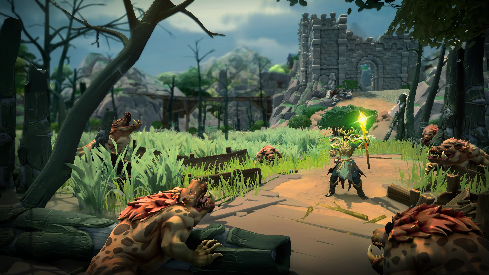
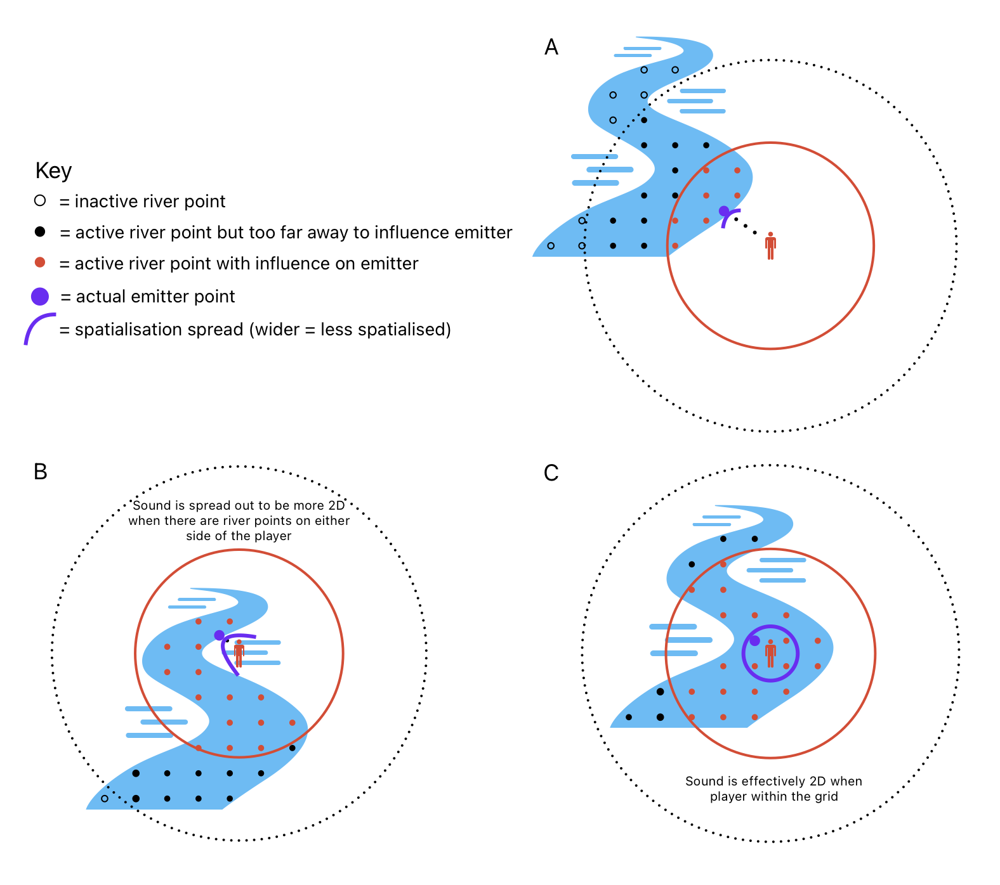

Scars of Honor is a free-to-play, no pay-to-win MMORPG currently in development by Beast Burst Entertainment.

I created a custom system for controlling the ambient sounds of bodies of water in the game, so that they would spatialise acurately whilst only requiring a single audio emitter for all ambient water sounds in the game.
This system was inspired by a series of articles written by Nic Taylor on the topic: Approximate Position of Ambient Sounds of Multiple Sources (2019) and Voxel-Based Emitters (2021) in Game Audio Programming 2 and 3 respectively (a great series edited by Guy Somberg).
I highly recommend getting these books and reading the articles in full if you're interested in this topic. Nic covers a range of methods for approaching this problem, and I settled on a slightly simplified (i.e. slightly less clever) version of the voxel based approach.

In order to optimise our workflows within the Wwise Authoring Tool, I created some custom python scripts to automate certain actions.
Another tool that I made for the project was a Footstep Detector written in C# to be used within the Unity Editor for automating the process of adding footstep animation events to animation files.
This was a tool that really helped our workflow, as we decided that we wanted the reliability of animation events for triggering footsteps in the game, but with many models in the game for characters, NPCs, and mounts we wanted to avoid the manual slow process of adding and managing events in each of the separate animation files.
The system tracks how the animation moves the models feet, and places animaiton events wherever the feet hit their lowest point in the animation. The system can also be set up to track any number of transforms for a given model for example for models with more than two feet.
The following video discusses the tool in further detail and demonstrates it working in practice: